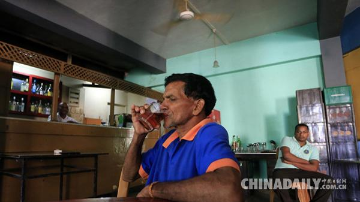
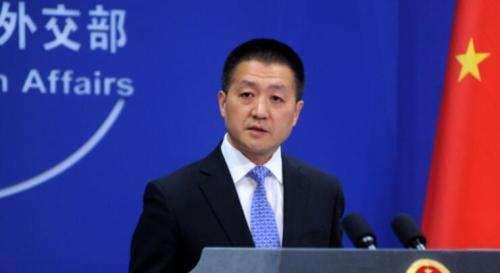
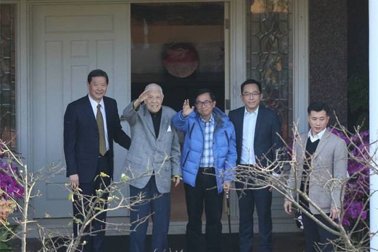
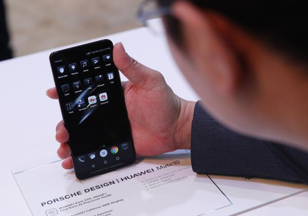
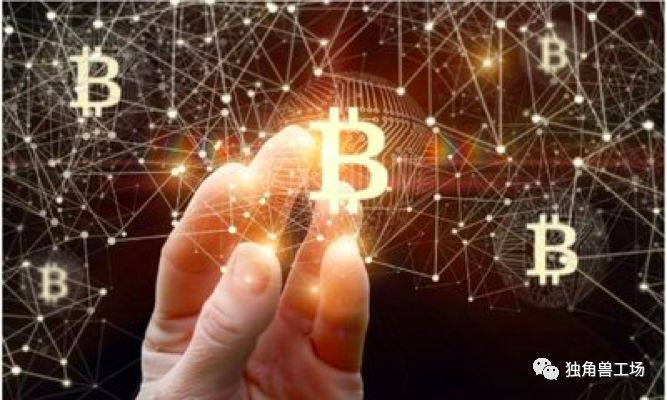

“习近平总书记的重要讲话，展现出共产党人坚定的信仰信念、鲜明的人民立场、顽强的意志品质、强烈的历史担当，为推进全面从严治党不断向纵深发展，进一步加强党的建设，夯实党的执政根基，实现党内政治生态根本好转，指出了明确方向，提供了根本遵循。”受访专家学者一致认为，习近平总书记高瞻远瞩、居安思危，充分展现出新时代中国共产党人勇于自我革命、不断砥砺奋进的政治品格。
中国日报网1月15日电（潘一侨） 据英国《卫报》1月15日报道，就在斯兰卡财政部长刚刚宣布取消长达近40年的女性饮酒禁令数天后，总统又宣布重新实施这一禁令。当地时间1月14日，斯里兰卡总统迈特里帕拉·西里塞纳宣布，他已要求财政部长曼加拉·萨马拉维拉撤销这一决定，该决定旨在废除自1979年以来禁止向女性销售任何类型酒精的法律。
昨天,在东海发生碰撞事故的“桑吉”号轮船突然发生爆燃并沉没。记者今天从外交部例行记者会上了解到,“桑吉”号上载有13.6万吨凝析油,碰撞后发生火情,十分危险。尽管如此,中方救援人员仍然冒着巨大生命危险和安全威胁多次接近事故船只,近距离实施搜救和灭火作业,展现了高度的专业素养。在“桑吉”号突然爆燃前,中方救援人员还冒着生命危险登船搜救,抢运出了两具遗体,并带回了该轮船载航行数据记录仪(俗称“黑匣子”)。
台媒报道称，李登辉陈水扁此次会面系二人关系首度“破冰”。据了解，陈水扁2000年第一次竞选台湾地区领导人时，李登辉曾全力相助，让陈水扁顺利当选，陈水扁也被视为李登辉所谓“理念”的“接班人”，当时两人关系被外界视为“情同父子”，陈水扁当选后也一度大打“尊李牌”。不过，陈水扁之后涉贪腐弊案，2006年“蓝委”提案罢免，台湾立法机构表决时，李登辉下令“台联党立委”集体投弃权票，两人关系由此陷入冰点。
据科技媒体TheVerge1月15日报道，美国得克萨斯州的一位议员迈克·科纳威（Mike Conaway）上周提出一项名为“ 保卫美国政府通讯”的法案，旨在禁止美国政府机构使用中国公司的电话和通讯设备。该法案旨在禁止使用或采购两家公司提供的任何电信设备或服务，作为“任何系统的实质性或基本组成部分”。
近日，一张关于徐小平和其鼓励大家拥抱区块链的截图在朋友圈火了；随后，经纬中国创始管理合伙人邵亦波向徐小平泼了冷水，表达了自己的看法。独角兽工场就此事发表了微博，从而引发了徐小平、薛蛮子、《经济学人》中文网等大佬们对于区块链的热议。真格基金会组织这方面的行业领袖和大家普及、讲解区块链知识。但我以全部的智慧呼吁大家，千万不要临渊羡鱼，而要冲到浪涛中去，迎接区块链即将给各行各业带来的巨大冲击。